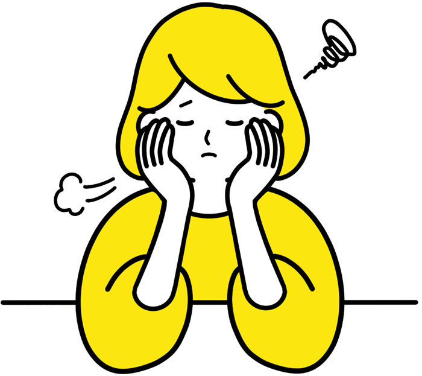
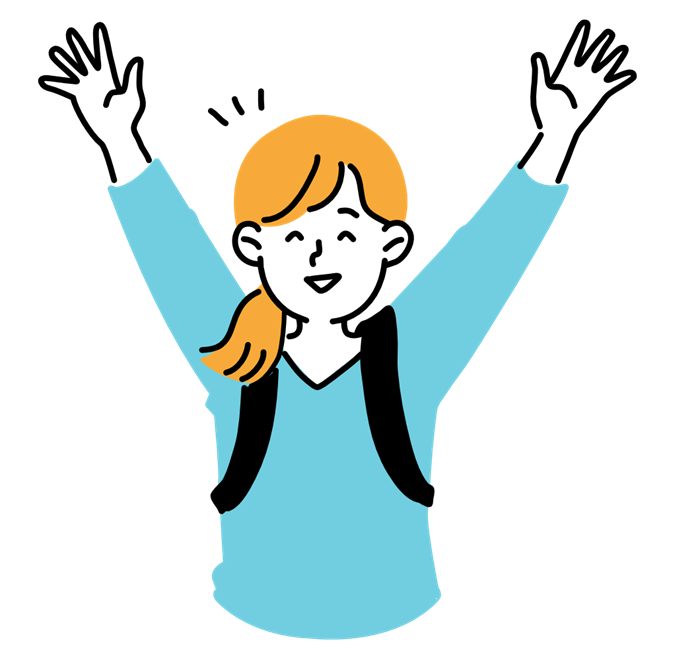

PREPARATION
入試対策
選抜方式ごとの特徴と準備のポイント、学習計画の立て方をまとめました。自分に合った方法を見つけ、自信をもって本番に臨みましょう。

ADMISSION METHODS選抜方式を知る
{{ cur.en }}
STUDY PLAN
学習計画
合格までの学習スケジュール例
時間管理のコツ

{{ t.en }}
{{ t.t }}
{{ t.d }}
RESOURCES対策に役立つ資料